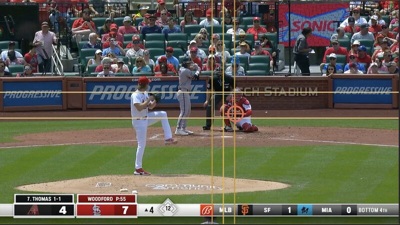

Computer vision / pitch review
CommandIQ
CommandIQ uses the catcher’s glove flash as the intended target, then compares it with where the pitch actually crossed the plate.
Video and TrackMan or Rapsodo-style data stay together for pitch-by-pitch bullpen review, saved sessions, and report export.
- Built with
- Swift, Python, Supabase
- Focus
- Computer vision and command review